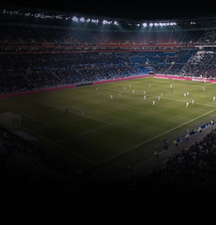
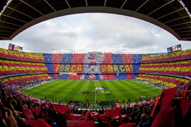
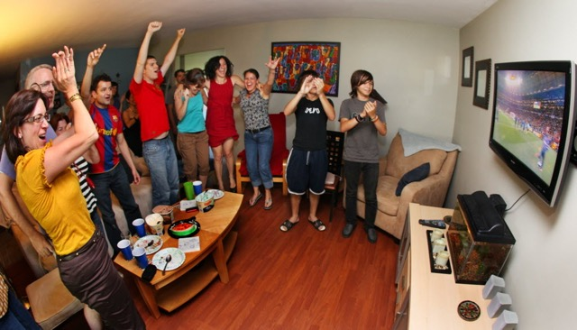
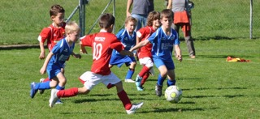
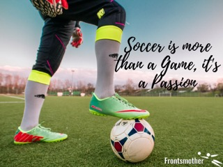

Soccer, also known as football in many parts of the world, is a team sport played between two teams. The objective of the game is to score by getting the ball into the opposing team's goal. It is the most popular sport globally, with millions of fans and players.
Team Sport Game
Can be played with many people as long as two even teams are formed.
Soccer is played in over 200 countries worldwide.
The FIFA World Cup is the most-watched sporting event globally.
A standard soccer match lasts 90 minutes, divided into two halves.
The first soccer rules were written in 1863 in England.

Soccer Game
About Me
Hi everyone 👋
My name is Long Doan, and I am a junior here at Charlotte.
I am a big sports fan. My favorite sport is soccer.
I have been a soccer fan since I was in elementary school. I play soccer
with my friends sometimes whenever I get a chance.
My favorite team is FC Barcelona from Spain.

FC Barcelona
When to enjoy Soccer
Soccer can be enjoy anytime
Soccer is a sport that can be enjoyed at any time of the year. Whether it's during the summer or winter, soccer matches are held throughout the year in various leagues and tournaments around the world.
When to enjoy soccer either watch or play
During weekends
During holidays
During major tournaments like the World Cup or UEFA Champions League
Anytime you have free time and want to enjoy the sport
Soccer Fans
Where to Play or Watch Soccer
Soccer can be played and watched in various locations around the world. Here are some common places:
Local Parks and Recreational Fields: Many communities have parks with soccer fields where people can play casually.
Soccer Clubs and Academies: These are organized places where players can train and compete in leagues.
Stadiums: Professional soccer matches are held in stadiums, which can accommodate thousands of fans.
Sports Bars and Pubs: Many fans gather at sports bars to watch live soccer matches on big screens.
At Home: With the rise of streaming services, many people watch soccer matches from the comfort of their homes.

Celebration
How to Play or Enjoy Soccer
Soccer is a versatile and enjoyable sport that can be played or watched by anyone. To play soccer, you need a ball, a field, and players. The game begins with a kickoff, and players work together to move the ball toward the opponent's goal. The objective is to score by kicking the ball into the opposing team's net while following the rules of the game.
If you prefer to enjoy soccer as a spectator, you can watch matches live at stadiums, on television, or through streaming platforms. Soccer matches are filled with excitement, skillful plays, and passionate fans, making it a thrilling experience for viewers.
Whether playing or watching, soccer emphasizes teamwork, strategy, and skill. It is a sport that brings people together and can be enjoyed by individuals of all ages and backgrounds.

Playing Soccer
Why I Love Soccer
Soccer is more than just a sport to me; it's a passion that brings joy and excitement to my life. Here are a few reasons why I love soccer:
Global Popularity: Soccer is the most popular sport worldwide, and being part of such a global community is thrilling.
Team Spirit: The camaraderie and teamwork involved in soccer make it a unique and enjoyable experience.
Physical Fitness: Playing soccer helps me stay active and healthy while having fun.
Exciting Matches: The fast-paced nature of soccer keeps me on the edge of my seat during matches.
Cultural Connection: Soccer connects me to different cultures and countries, broadening my horizons.

Love for Soccer
AI Prompts That I Used
how do I make one section appear at a time
how to switch page between what who where.
help me write the how section.
Help me design this page nice and pretty
I want the header and footer also center but fixed on top and bottom of the page